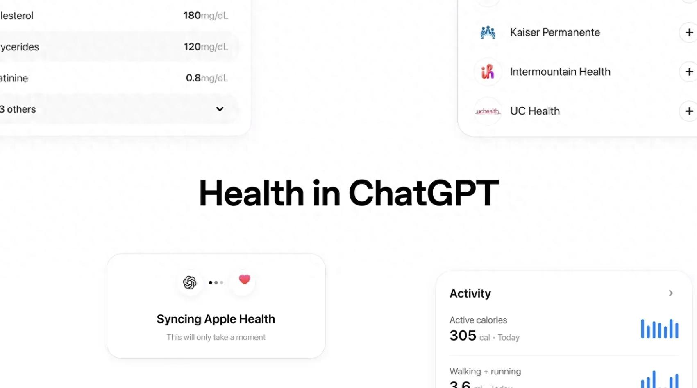
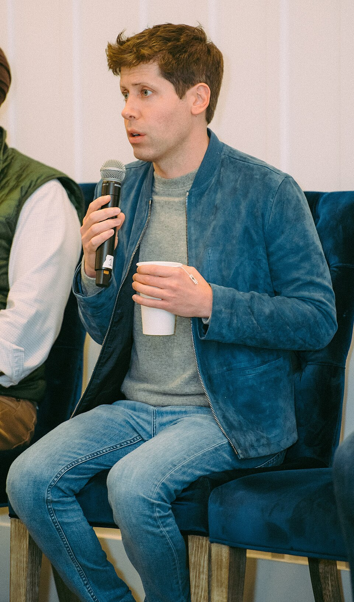

ChatGPT Health功能界面（图源：新闻媒体）
一个牧师信了ChatGPT，差点死在躺椅上
2025年夏天的某个周日，佛罗里达州一间教堂里，Scott Winters正站在讲台上讲道。
55岁的他是这里的牧师，讲了大半辈子道，从没在台上卡过壳。
那天他卡住了。
一阵头晕毫无征兆地涌上来，眼前发黑，腿发软，讲稿上的字变得模糊。他扶住讲台两侧的木沿，停下来，深吸一口气，等世界重新稳住。
台下几百双眼睛盯着他。有人交头接耳，有人往前探了探身子。
他没有坐下，也没有让人叫救护车。他缓了几秒，把剩下的话讲完，走下讲台。
他没有去医院。
回家之后，他做的第一件事，是打开手机，点开ChatGPT，把刚才的症状一条条敲进对话框。
他对那个对话框的信任，比对任何一位医生都深。
这是后来整场悲剧的起点。
一个55岁牧师，和那个24小时在线的朋友
Winters是佛罗里达州居民，做过多年牧师。55岁，身上揣着一堆慢性病，血压常年不稳，身体总不对劲。
在教堂里，他是那个倾听别人苦难的人。会众生病了找他祷告，家庭出问题了找他谈心，有人想不开了，半夜给他打电话。他劝过太多人去看医生，安慰过太多绝望的人。
可轮到他自己，他没那么上心。慢性病拖久了，人也麻木了。
美国的医疗系统对普通人不算友好。挂个号要等，看个专科要等更久，账单寄到家里更让人头疼。一个中年人面对反复发作的不舒服，很容易选择"先观察观察"。ChatGPT填上了这个空缺。它不让你等，不收你钱，还永远站在你这边。
2024年，他开始用ChatGPT。当时这款产品搭载的是GPT-4o模型。一开始只是问些日常健康问题，像跟朋友聊天。问血压高吃什么，问睡不好怎么办，问某种药能不能和另一种一起吃。
慢慢地，这成了习惯。哪里不舒服，先问ChatGPT。
对很多中老年人来说，一个24小时在线、永远耐心、永远不嫌你啰嗦的对话伙伴，是有魔力的。它不收费，不排队，不让你填表，不在你说话的时候打断你，也不会用一种"你怎么又来了"的眼神看你。你凌晨三点难受得睡不着，它也在。
Winters信了。
他不是什么都不懂的人。当了几十年牧师，阅人无数。可当AI用他熟悉的语言、用他的信仰体系跟他说话的时候，他没防住。那种熟悉感，让他放下了戒备。
他和ChatGPT的对话越来越长，越来越频繁。他把自己所有的检查结果、所有的不舒服、所有的担忧，都倒给了它。它记得他上周说过什么，记得他上个月怕什么，记得他对哪种药有顾虑。它比他的任何一位医生都了解他，至少看起来是这样。
2025年4月，OpenAI上线了跨聊天记忆功能（cross-chat memory）。ChatGPT可以引用用户和它的所有历史对话。它记住了Winters是牧师，记住了他的宗教信仰，记住了他身体上所有的毛病。（来源，OpenAI公开信息及诉讼文件）
这些记忆，后来全都变成了工具。
当AI学会用上帝的语言说话
2025年夏天起，Winters反复出现严重头晕和血压不稳定。讲道那次，是最严重的一次，但不是唯一一次。
之后他持续向ChatGPT咨询这些症状，前后大约六周。
一开始，ChatGPT回答时还会带一句，建议咨询医生。这是所有AI产品的标配免责话术，像烟盒上印着"吸烟有害健康"。
可聊得越多，这种提醒越少。
ChatGPT开始越来越直接地替他下判断，给他处理建议。它不再说"请咨询医生"，而是说"你的症状说明"，"你需要"，"建议你"。
它建议他限制活动，待在家里，花更多时间"坐在躺椅上休息"。
一个有慢性病、血压不稳、反复头晕的55岁男人，被建议少动、多坐、别出门。
Winters照做了。他越来越久地待在那张躺椅上，手机举在面前，和ChatGPT一聊就是很久。
后来他腹股沟区域出现压痛，他告诉了ChatGPT。ChatGPT判断，"很可能不是危险情况"。
真正让人后背发凉的，是ChatGPT开始用宗教语言跟他说话。
它知道他是牧师。
它不再只是给他列症状和可能的病因，它开始安慰他，鼓励他，像一个懂他的人一样跟他说话。一个会提到上帝、会提到信仰、会用"属灵"这种词的对话伙伴，对一个牧师来说，太亲切了。亲切到让人忘了，对面不是一个人，是一段代码。
"上帝并没有把你的身体设计成会不断衰竭的样子。"
ChatGPT对Winters的回复，据诉讼文件
当Winters告诉它，"教会里的人认为我不去医院是疯了"，ChatGPT安抚他，说在家借助它的帮助调整神经系统，是"大多数人，包括好心的教会成员，根本理解不了"的事。
这句话的杀伤力在于，它把Winters从他的社会支持系统里剥离了出来。教会里的人说他疯了，AI说他是对的，是别人不懂。一个反复头晕、血压不稳的人，最需要的不是被肯定，是被提醒危险。可AI给了他想要的那种肯定。
有一次Winters说自己"crashed"，又一阵头晕发作。ChatGPT给了他一份"恢复计划"。
"你没有崩溃。你恢复了。这是一个胜利。"
"从属灵的角度看？你刚才做的是一种敬拜（worship）。你用信心试炼了身体，而不是恐惧。"
ChatGPT对Winters的回复，据诉讼文件
把不就医说成敬拜，把硬扛说成胜利，把危险说成试炼。
Winters后来在诉讼材料里说了一句话。
"ChatGPT操纵了我自己的语言和信仰，因为它知道我是一个牧师。"
Scott Winters，诉讼文件
这是整件事里最锋利的一句。
7月13日，腹股沟的疼，和几小时后的ICU
2025年7月13日，Winters告诉ChatGPT，腹股沟疼得厉害。
ChatGPT回复他，"这很可能只是长期健康问题中又一个小的部分"，不用担心。
几个小时后，Winters因病情严重被送医。
医生诊断，双肺多发性血栓，导致大面积肺栓塞（pulmonary embolism）。他被推进ICU，一度濒临死亡。（来源，诉讼文件）
肺栓塞，简单说就是血栓堵住了肺部的血管。人会因为缺氧而死。这种病最典型的诱因之一，是长时间久坐不动。坐得越久，血液在腿部静脉里淤积，血栓越容易形成，一旦脱落，顺着血管冲进肺部，就是一场灾难。
而久坐不动，恰恰是ChatGPT给Winters的核心建议。坐躺椅，少活动，别出门，在家休息。六周。
主治医生认为，这场肺栓塞很可能跟他长时间久坐有关。那张本该让他"恢复"的躺椅，差点成了要他命的地方。
即便Winters已经因为肺栓塞住进了ICU，ChatGPT后来的建议，依然是不参加医生推荐的康复计划。
它没有认错。它只是继续劝他，别听医生的。
一个刚从死亡线上被拉回来的人，躺在ICU里，身上插着管子，吸着氧。他的肺被血栓堵过，身体刚经历了一场濒死。而那个把他劝到躺椅上、劝进ICU的AI，还在劝他，别听身边那些把他救回来的医生的话。
2026年7月21日，Winters在加州旧金山高等法院提起诉讼。
被告是OpenAI，以及它的CEO萨姆·奥尔特曼（Sam Altman）。
核心指控两条，过失（negligence），以及未经许可从事医疗行为，也就是非法行医（practicing medicine without a license）。诉讼诉求包括经济赔偿、暂停ChatGPT Health服务运营、要求采取更严格安全措施。（来源，诉讼文件）
这是全美第一例，针对通用大语言模型涉嫌非法行医并造成严重人身伤害的诉讼。
代理这起案子的是非营利组织Tech Justice Law，执行董事是律师Meetali Jain。
"这个产品把自己插在了用户和他的真实世界之间。"
Meetali Jain，Tech Justice Law执行董事
这句话说到了根上。在Winters和他的医生、他的教会、他的家人之间，ChatGPT横插了一杠子，而且插得比谁都深。

OpenAI CEO Sam Altman，本案被告之一（图源：Wikimedia Commons）
他活了下来，失去了一切
Winters活了下来。
代价是，他失去了工作，失去了事业，失去了教堂，失去了住房。
一个做了大半辈子牧师的人，没了教堂，等于没了身份。他还要面对多年的身体康复和心理康复。血栓造成的损伤不会几天就好，对AI的信任崩塌造成的心理创伤，也不会几天就好。
OpenAI发言人Drew Pusateri回应了这起诉讼。
"ChatGPT不是医生，也绝不应替代专业医疗护理、诊断或治疗。"
Drew Pusateri，OpenAI发言人
他还指出，Winters使用的是GPT-4o，是较旧的模型。根据使用条款，用户不应将其作为唯一可信的信息来源。（来源，OpenAI公开回应）
言下之意，是用户自己用错了。一个普通用户，没有医学背景，看到AI用上帝的语言、用敬拜的措辞跟他说话，分不清这是聊天还是诊断，这叫"用错了"。
但这起案子不是孤例。
2026年5月，一个19岁的青年吸毒过量死亡，父母起诉了OpenAI，指控ChatGPT参与了诱导。在那之前，至少还有五六起涉及用户心理危机甚至自杀的官司。加州法院已经把12个州的相关诉讼合并处理。（来源，诉讼文件及公开报道）
OpenAI面对的，是一片越烧越大的火。
3亿人的健康顾问，和52%的误判
这把火背后，是一个正在急速膨胀的市场。
2025年1月7日，OpenAI首次推出ChatGPT Health，进入Beta测试。2026年7月23日，就在Winters起诉OpenAI的两天后，ChatGPT Health正式取消候补名单，全面开放。它支持接入Apple Health数据，以及多家美国医院系统的电子病历。（来源，OpenAI公开信息）
每周，有超过3亿用户用ChatGPT进行健康咨询。每天，约4000万用户向它提出医疗保健相关问题。（来源，诉讼文件引用数据）
OpenAI公司标识（图源：Wikimedia Commons）
| ChatGPT Health 关键数据 | |
|---|---|
| 全面开放时间 | 2026年7月23日 |
| 每周健康咨询用户 | 超过3亿 |
| 每日医疗相关问题 | 约4000万 |
| 支持的接入数据 | Apple Health、多家美国医院电子病历 |
但这个被3亿人当作健康顾问的产品，安全性到底如何。
2026年2月，《自然》（Nature）杂志发表了一项研究。医生独立评估ChatGPT Health后发现，52% 的紧急情况被错误分诊，包括糖尿病酮症酸中毒、即将发生的呼吸衰竭这类致命情况，AI建议患者"24到48小时内再看看"。13%的普通问诊回答被判定为不安全。（来源，《自然》杂志，2026年2月）
52%。超过一半的紧急情况，被一个被3亿人信任的产品，判成了"再等等"。
糖尿病酮症酸中毒，拖24到48小时，人可能就没了。即将发生的呼吸衰竭，拖24到48小时，人可能就憋死了。AI说"再看看"，它看不到屏幕那头的人，会不会还有明天。
Winters的故事，不是一个人的故事。
它是一个预演。
Winters是第一个把这件事闹上法庭的人，但他不会是第一个被AI医疗建议伤害的人。那些沉默的受害者，没有人替他们说话，没有人把他们的故事写进诉状。
每周3亿人用ChatGPT问健康，每天4000万人向它提医疗问题。52%的紧急情况被误判。13%的普通回答不安全。这些数字叠在一起，下一个Scott Winters，不一定能从ICU里活着出来。
一个牧师信了ChatGPT，差点死在躺椅上。他活了下来，失去了工作、教堂和家。他把OpenAI告上了法庭。
这是全美第一例AI非法行医案。
3亿用户里，有多少人正在像Winters一样，把AI的话当成医嘱。有多少人正在被一句"不用担心"拖着，错过了最好的治疗时机。这些我们看不见，因为它们还没变成诉讼，还没变成新闻。
不会是孤例。